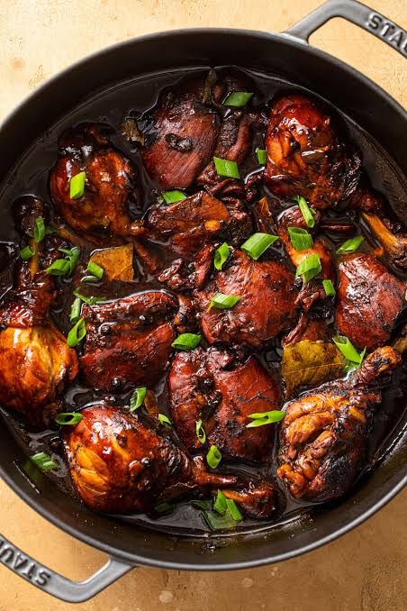

This chicken adobo recipe is simple to make and loved by all who try it! It has been modified to be a bit saucier than traditional adobo and is delicious served over rice.
This recipe features tender, juicy chicken that simmers in a rich, vibrant vinegar and pepper sauce.